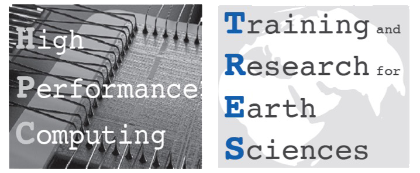

Development of a High Performance Hydrological Model
Development of a High Performance Hydrological Model
Stefano Campanella





The Plan:
The Five Ws (and the How)
Who?
Background: Theoretical Physics
I graduated with a thesis in HEP (phenomenology, hadron spectroscopy) at the University of Bari
Embedded System Developer
Embedded Systems ≈ HPC
knowledge of the hardware, limited resource and relevance of computational time
Embedded Systems ≠ HPC
numerical algorithms, open-source development environment and higher level languages
Substitute Teacher (Phys & Math)
Funny enough, thanks to a script:
# Sending MADs (Messa A Disposizione)
for indx, s in schools.iterrows():
print("Sending to {}, {}".format(s.Istituto, s.Comune))
code = indx.lower()
send_email(code, "pec")
(You can find the whole script here)
More to the point
Long interest in OSS and CS (ex. functional programming languages)
What?
- I got a HPC-TRES fellowship
- I am now a student of the MHPC
- I will work on GEOtop
The Master in High Performance Computing (MHPC, SISSA & ICTP) is a degree program that prepares students for careers in the fast-growing field of HPC
GEOtop is a distributed model of the mass and energy balance of the hydrological cycle
When?
- The MHPC lectures will last until may (approx)
- Then I will work on my thesis on GEOtop
Where?
Trieste (SISSA and ICTP) and Bolzano (EURAC)
The EURAC is a private research institute based in Bozen, with a strong focus on humanities and sciences related to the alpine environment
Why?
GEOtop codebase and documentation have several issues (not uncommon in scientific software packages)
Scientifically advanced, but suffering from a big technological debt and poor implementation choices
What HPC means for GEOtop?
High Performance Computing
High Performance Computing
High Productivity Computing
So the title of this presentation should really be:
Development of a High Productivity Hydrological Model
How?
Refactoring?
See previous talk...
Reengineering?
- Replacing custom linear algebra routines with BLAS/LAPACK: multithreading for free
- Removing useless IO code
- Modularizing the codebase
Rewriting?
Julia is a good candidate
Julia in 5 Slides
The 2 Language Problem

Some Microbenchmaks